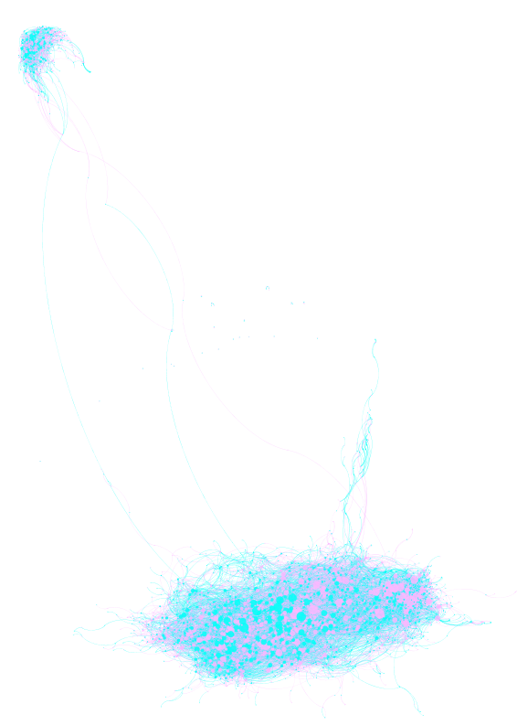
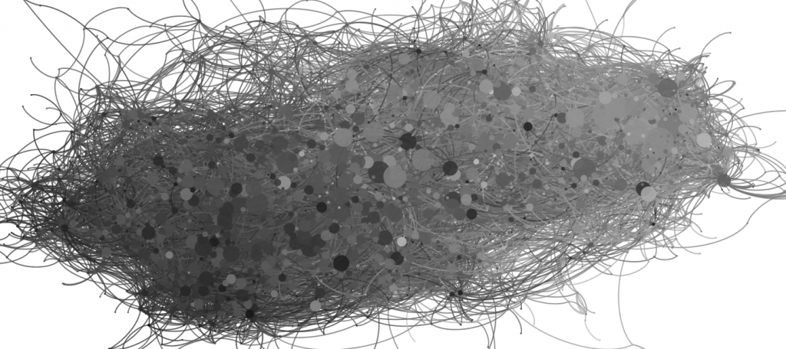

Playing with the fabulous layout functions in the new Gephi and an incredible network of literary genetics.


Originally published at Digital Humanities Specialist. This edition preserves the original text and historical context.
Playing with the fabulous layout functions in the new Gephi and an incredible network of literary genetics.

